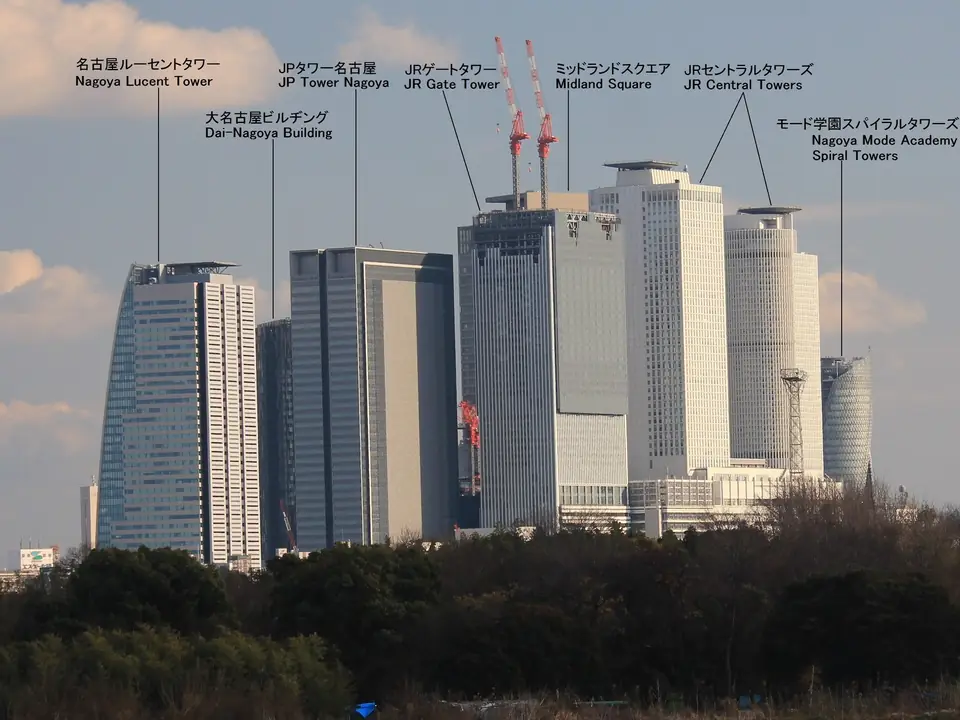

TOKAIDO SHINKANSEN WINDOW VIEW
名古屋到着直前——駅前の高層ビル群、その正体
あのビル群は何？名古屋駅前。

- 見える区間
- 名古屋到着直前
- 座席側
- E席・山側
- タイミング
- 東京発のぞみ基準で約94分後
- 写真
- 4 枚
あの高層ビル、どれがどれ？
名古屋駅前（名駅・めいえき）エリアは、平成〜令和にかけて名古屋の顔として大きく変化してきた再開発エリアです。1999年、駅の真上にJRセントラルタワーズがオフィス・ホテル・百貨店を統合した超高層複合施設として完成し、名古屋のスカイラインを大きく塗り替えました。その後、2007年ミッドランドスクエア（トヨタ自動車グループ本社ビル）、2008年モード学園スパイラルタワーズ、2017年JRゲートタワーと、10〜20年のスパンで駅を取り囲む形で超高層ビルが積み上がっていき、駅前は日本国内でも屈指の高層ビル集積地になりました。
もっと見る: JRセントラルタワーズ 公式JRゲートタワー 公式名古屋モード学園: スパイラルタワーズミッドランドスクエア 公式名古屋市: 名駅地区のまちづくり
東京から新大阪方面へ向かう場合は、名古屋到着直前が近づいたらE席・山側の窓を少し早めに見てください。新大阪から東京方面へ向かう場合は、通過順が逆になります。
主な高層ビル、それぞれの特徴
JRセントラルタワーズ（1999年）は、駅の真上に立つ双塔で、オフィス側245m、ホテル側226m。当時「駅ビル」の常識を大きく塗り替えた建築として国際的にも注目されました。名古屋駅の顔として長く親しまれる存在です。

JRゲートタワー（2017年）は、セントラルタワーズと隣接して立つ約220mの複合ビル。低層部にはJR名古屋高島屋のゲートタワーモール、上層はオフィスとホテル。新幹線ホームが直接ビルの下に組み込まれた特殊な構成で、乗車したまま巨大なガラス壁の下を潜っていく感覚があります。
モード学園スパイラルタワーズ（2008年）は、名駅エリアで最も目立つ独特のシルエットを持つ170mの校舎ビル。3本の光沢帯（ホワイトカーテンウォール、ダークメタリック、シルバー系ガラス）が上方向に螺旋を描く外観で、専門学校3校（HAL・モード学園・首都医校）が入居しています。日本建築学会賞など多数の受賞歴があるモダン建築です。
ミッドランドスクエア（2007年）は、トヨタ自動車グループの本社ビルとして建てられた247mの複合ビル。低層階のブランドショップ、上層のオフィス、最上階には屋外展望施設「スカイプロムナード」があります。夜景スポットとしても知られる存在です。
そのほか、駅の南西側には大名古屋ビルヂング（2016年建替、180m）、名古屋ルーセントタワー（2007年、180m）などが並び、車窓では複数の高層ビルが折り重なるように見えます。
位置の目安
地図をひらくスポット位置と、新幹線から見る位置を切り替えられます。
名古屋駅前を見逃さないコツ
1. 先に見る方向を決める
名古屋到着直前が近づいたら、E席・山側の窓を先に意識してください。現在地から追う場合はライブガイド、事前に確認する場合はこのページの地図が役立ちます。
この景観は区間の中で断続的に見えます。建物や地形で隠れるため、表示時間は連続して見える秒数ではなく、探し始める区間の目安です。
2. 見どころ
名古屋到着の数分前から、E席側に高層ビル群が見え始めます。まずは「ねじれたスパイラル型」（モード学園）を目印に、そこから駅の方向へ視線を寄せると2本並ぶ白い塔（JRセントラルタワーズ）と、その隣のガラスの塔（JRゲートタワー）が見つかります。もっと視線を上へ振ると濃い色のミッドランドスクエア。夜はライトアップや窓明かりで層状のスカイラインが強調され、昼とは違う印象を楽しめます。
写真で見る名古屋駅前


 関連
キリンビール工場
関連
キリンビール工場
 関連
清洲城
関連
清洲城
 関連
ソーラーアーク
関連
ソーラーアーク